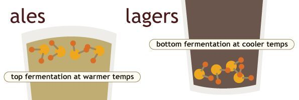
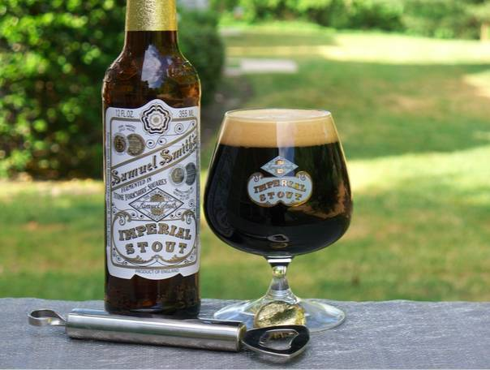

chapter7.2--handout
Background Information
Connotation of the color pink (粉色暗示了什么？)
“An Oxford man!” He was incredulous. “Like hell he is! He wears a pink suit.”（"牛津大学毕业生！"他完全不相信，"他要是才他妈的怪哩！他穿一套粉红色衣服。"）
为什么Tom仅仅因为Gatsby穿了一套粉红色的衣服就笃定说他不是牛津大学毕业的呢？虽然今天我们对于粉色的偏见往往在于它的性别气质，比如认为粉色代表的是女性气质femininity, 对于穿粉色衣服的男孩会“戏称”为sissy（女孩子气的男孩）。但在20世纪初的美国，粉色常常和一个人的出身阶级（class origin）联系在一起：Pink had working-class connotations.
也就是说，工人阶层才会穿粉色，一个受过高等教育、上层社会的绅士是不会穿粉色的（An educated, upper-class gentleman – an Oxford man – would not wear a pink suit）.
但在今天，这个潮流也出现了反转。比如喜欢穿粉色T恤或者在高尔夫球场上穿粉色裤子的，常常是混迹各个乡间俱乐部（country club）的年轻富家子弟们（It’s the preppie type men at the country club who are wearing pink shirts or even, on the golf course, pants）.
Snob (势利鬼)
“Listen, Tom. If you’re such a snob, why did you invite him to lunch?” demanded Jordan crossly.
"我说，汤姆，你既然这样”瞧不起人，那么为什么请他吃午饭呢？"乔丹气恼地质问道。
snob指“自命不凡的人，势利鬼”（a person who despises, ignores, or is patronizing to those he or she considers inferior）. 我们熟悉的虚构人物形象属于snob这一类呢？
比如，《怪物史莱克》里的白马王子（Prince Charming）:
"I am the rightful King of Far Far Away!"（我才是遥远王国的真正国王！）
"I mean, how charming can I be when I have to pretend that I'm that dreadful orge?"（要我装成那个可怕的怪物，我还怎么展示我的魅力呢！）——Prince Charming把自己变成Shrek接近Fiona, 但说话和行为都完全是自己原本暴躁傲慢的样子，结果当然没能赢得Fiona的爱和信任，于是有了以上的托辞。
Vocabulary
stagnant
adj. 污浊的；不流动的，停滞的；不景气的 (stagnant water or air; not changing or making progress)
原文：On the green Sound, stagnant in the heat, one small sail crawled slowly toward the fresher sea.
在绿色的海湾上，海水在酷热中停滞不动，一条小帆船慢慢向比较新鲜的海水移动。
💧stagnant可以表示“（水或空气）因为不流动而变的污浊”，也可以指事物“停滞不前，没有发展”，比如：He is seeking advice on how to revive the stagnant economy.
他正在就如何振兴低迷的经济征求意见。
morbid
adj.（兴趣、精神、思想等）病态的 (with a strong and unhealthy interest in unpleasant subjects)
原文：“Don’t be morbid,” Jordan said. “Life starts all over again when it gets crisp in the fall.”
"不要这样胡思乱想，"乔丹说，"秋天一到，天高气爽，生活就又重新开始了。
💧morbid表示“病态的”，尤指“心理上不正常的”，比如：Some people have a morbid fascination with crime.
一些人对犯罪有一种病态的痴迷。
💧morbid的名词形式是morbidity. morbidity and mortality就是指“（某一疾病的）发病率和死亡率” 。
Crush Your Problems
- We had luncheon / in the dining-room, / darkened too / against the heat, / and drank down nervous gayety / with the cold ale.
我们在餐厅里吃的午饭，里面也遮得很阴凉，大家把紧张的欢笑和凉啤酒一起喝下肚去。
💧表达精讲
①darkened too against the heat “遮得很阴凉”；这里指餐厅的窗户外也安置了遮阳的天篷（我们昨天介绍的awning）;
②drank down nervous gayety with the cold ale “大家把紧张的欢笑和凉啤酒一起喝下肚去”；drink down指“一饮而尽”（to drink all of something）; nervous gayety也是一组矛盾修辞（Oxymoron）, 这里暗示虽然表面上气氛融洽，但其实大家都各自心怀鬼胎。 - Her voice struggled on / through the heat, / beating against it, / molding its senselessness into forms.
她的声音继续在热浪中挣扎，向它冲击着，把没有知觉的热气塑成各种形状。
💧表达精讲
①struggled on through the heat “继续在热浪中挣扎”；struggle on 表示“继续挣扎”（keep on struggling）, on在这里作副词，表示一种持续性；
②molding its senselessness into forms “把没有知觉的热气塑成各种形状”；senselessness是指热气（the heat）本身的特质，有两层含义：“没有知觉、意识”（unconsciousness）; “没有意义、目的”（meaningness）;
这里作者表达得很晦涩，但其实就是在暗指Daisy说的话、她的声音也充斥着“无意义”，比如：“What’ll we do with ourselves this afternoon?” cried Daisy, “and the day after that, and the next thirty years?” - Daisy looked at Tom / frowning, / and an indefinable expression, / at once definitely unfamiliar and vaguely recognizable, / as if I had only heard it / described in words, / passed over Gatsby’s face.
黛西皱着眉头瞧瞧汤姆，同时盖茨比脸上掠过一种难以形容的表情，既十分陌生又似曾相识，仿佛我以前只是听人用言语描述过似的。
💧句式拆解
①首先看这句话的主体结构：Daisy looked at Tom...and an indefinable expression...passed over Gatsby's face.
②frowning 是现在分词作伴随状语修饰Dasiy;
③at once definitely unfamiliar and vaguely recognizable 是expression的后置定语（at once在这里相当于at the same time）;
④as if I had only heard it described in words 是修饰expression的状语从句。 - The immediate contingency / overtook him,/ pulled him back / from the edge of the theoretical abyss.
当务之急追上了他，把他从理论深渊的边缘拉了回来。
💧表达精讲
①the immediate contingency “当务之急/眼前的突发事件”；contingency指“〔可能发生的〕意外事件”（an event, such as an emergency, that may but is not certain to occur）. 而immediate则指“当下的，紧急的”，比如：Let’s try and solve the most immediate problem.
让我们尽力解决最急迫的问题吧。
②overtake 指“（不愉快的事情）突然降临到”（something bad, especially a feeling happens to sb suddenly）. 比如：A terrible sense of panic overtook him.
他突然产生了一种可怕的惊慌感。
③theoretical abyss “理论的深渊”；abyss指“险恶的局面，危险境地”（a very dangerous or frightening situation）, 比如：The country might plunge into the abyss of economic ruin.
这个国家也许会陷入经济崩溃的危险境地。
根据上文，Tom本来在谈论科学（"Maybe you don’t believe that, but science ——"），然后意识到当下最要紧的是关于Gatsby的出身背景，于是调转话（“I’ve made a small investigation of this fellow,” he continued. “I could have gone deeper if I’d known ——”）. - After a moment / the proprietor / emerged from the interior of his establishment / and gazed / hollow-eyed at the car.
过了一会老板从车行的里面走了出来，两眼呆呆地盯着看我们的车子。
💧表达精讲
①the proprietor “企业主，老板”（an owner of a business）, 这里就是修车行的Mr. Wilson啦~
②establishment 除了表示抽象意义上的“建立，设立”，还可以指具体的“机构，单位，商店”（这里指修车行），比如an training establishment就是“培训机构”；
③hollow-eyed 指“（因过度疲劳而）两眼凹陷的”；注意这里hollow-eyed是修饰the proprietor的定语哦~
Content Analysis
开头的场景依然是在Tom的豪宅里。尽管表面上其乐融融，但暗地里却隐藏着不少紧张激烈的情节，比如Daisy在Tom的面前公然和Gatsby调情——
💧Clue 1: Dasiy is being obvious about her affair with
Evidence 1: “You always look so cool,” she repeated. She had told him that she loved him, and Tom Buchanan saw.
"你看上去总是那么帅。"她重复说。她已经告诉他她爱他，汤姆·布坎农也看出来了。
比起Gatsby的小心谨慎，Daisy则轻佻得多。比如毫不掩饰自己从以前就认识Gatsby这件事（Daisy用了always）, 以及她对他的爱慕 。
之后大家一起准备出发去纽约市里的时候，Daisy拒绝和Tom同车，而是大摇大摆地走向了Gatsby, 还用手拽着他的上衣（俨然一副小鸟依人的模样）——
Evidence 2: He opened the door, but she moved out from the circle of his arm. “You take Nick and Jordan. We’ll follow you in the coupe.” She walked close to Gatsby, touching his coat with her hand.
他打开车门，但她从他手臂的圈子里走了出去。"你带尼克和乔丹去。我们开小轿车跟在你后面。" 她走近盖茨比，用手摸着他的上衣。
这可以说是Daisy对Tom出轨在先的挑衅和反击了，但她是否真的有意要和Gatsby再续前缘也还没能下定论。我们再来看一看今天内容里出现的Daisy声音的描述——
💧Clue 2: Daisy's voice is materialistic and shallow.
Evidence 1: It was full of money — that was the inexhaustible charm that rose and fell in it, the jingle of it, the cymbals’ song of it...high in a white palace the king’s daughter, the golden girl...
它是充满了金钱——这正是她声音里抑扬起伏的无穷无尽的魅力的源泉，金钱了当的声音，铙钹齐鸣的歌声……高高的在一座白色的宫殿里，国王的女儿，黄金女郎……
在前面的几章内容中，Daisy的声音给我们留下的印象是“迷人的”（enchanting）“神秘的”（mysterious）, 总是让人不由自主地朝她靠近。而这里的描述则更直接——“她的声音充满了金钱”，有两层含义：一是指她出身富有；二是指她对物质金钱有着强烈的渴望。
除了物质性，她的声音还透露了她的肤浅——
Evidence 2: “What’ll we do with ourselves this afternoon?” cried Daisy, “and the day after that, and the next thirty years?”
"我们今天下午做什么好呢？"黛西大声说，"还有明天，还有今后三十年？"
读到这里，大家也许想起了Nick第一次到他们家做客的时候，Daisy也有过一番类似的发问：“Do you always watch for the longest day of the year and then miss it? I always watch for the longest day in the year and then miss it.” “All right,” said Daisy. “What’ll we plan?” She turned to me helplessly: “What do people plan?”
这两处的问句都属于“假装疑问”（Aporia）的修辞手法，也就是说话者虽然在提问，但其实并不期待可以得到回答，因为问题本身往往是无解的，比如《哈姆雷特》中的"To be, or not to be: that is the question."就是一个典型的例子。
这些问题反映出了Daisy内心的空洞，另一方面也折射了她所处的上流阶层的生活，在浮华背后其实是空虚和挥霍。
Today's Bonus
💧Some knowledge about beer 啤酒常识
因为天气炎热，所以故事里的主人公们都喝起了冰啤酒来解暑（We had luncheon in the dining-room, darkened too against the heat, and drank down nervous gayety with the cold ale）.
那么这里的ale指的是什么啤酒呢？我们来看一看啤酒的分类~
- 啤酒分类
啤酒进化的过程有几千年的时间，弄不清它的风格口味是很正常的。一般可以按照颜色和产地来分，但也可以根据啤酒本身的发酵方式（国外习惯直接在啤酒瓶上标注啤酒的风味，所以了解发酵方式会更在选择种类的时候更便利哦~），最基本的是两种：Ale（爱尔）和Lager（拉格）。两者的差别只在于发酵的温度和酵母工作的位置（Ale是上发酵，Lager是下发酵）↓
 直观来说，就是喝Ale啤酒的时候先喝到酵母和辅料的味道，之后要在这些味道里面找麦芽的香味，而Lager啤酒先喝到的是麦芽的香味，然后才有其它辅料的味道。
其他各种风味都是从两种发酵方式演变而来的，比如黑啤（Stout）就属于Ale的一种。黑啤的出现是因为1698年彼得大帝在它的欧洲之旅时爱上了 英国波特黑啤酒，并要求英国酒商为俄罗斯圣彼得堡的宫廷酿造波特啤酒。但是，由于途经两百多公里寒冷的波罗的海，啤酒面临冻结、变坏等问题，变得不可饮用。英国酒商随之进行改良，增强了该酒的酒精浓度和啤酒花投放量（所以酒精度数比较高并且苦味很重），以抵御严寒的天气并更好保存啤酒。
最有名的一款黑啤是由英国约克郡森美尔（Samuel Smith）啤酒厂生产的帝国世涛（Imperial Stout）.

在《王牌特工》里出现的健力士（Guinness）也是黑啤。
而国内产的青岛、燕京都属于Lager（所以品牌商会非常强调“麦芽”，因为Lager先喝到的是麦芽香）。 - 啤酒选择
一般在选择啤酒的时候很容易产生以下误解：
①啤酒的颜色越深酒精度越高？
深色的啤酒往往给人带来酒精度更高、口味更重的感觉。在绝大数情况下啤酒的颜色取决于麦芽，而决定酒精度高低的是麦汁中的含糖量，而不是麦芽的颜色。同时也跟酿制工艺有关。
②啤酒泡沫越多越好？
啤酒质量好坏不能以泡沫的多少来定。优质啤酒的泡沫应细腻、洁白，且挂杯持久，酒液饮完之后仍有大量泡沫在杯壁之上，才是真正的好啤酒。同时泡沫的多少还取决于啤酒的风格和当时的饮用温度。
③啤酒还有生的？熟的？
熟啤（Pasteurimd）指的是经过了巴氏消毒灭菌的啤酒。但高温杀菌使其牺牲了一定的口感，并不是最好喝的啤酒。真正好喝的是生啤，也叫鲜啤（Draught）, 它保留了啤酒原有的风味和活性酵母菌，口感更胜一筹。但这种啤酒保质期不长只有3—5天，而且必须低温保存。
并且在生啤里最好喝的是——“扎啤”（Draft）. draft是指“经过净化、汲取的”，这样命名是因为扎啤从酿造工艺来讲，本质就是酿制成熟的，未经热处理的。因此也保持了良好的口味和营养。
对于喜欢清淡口味的小伙伴来说，light beer也会是不错的选择哦~